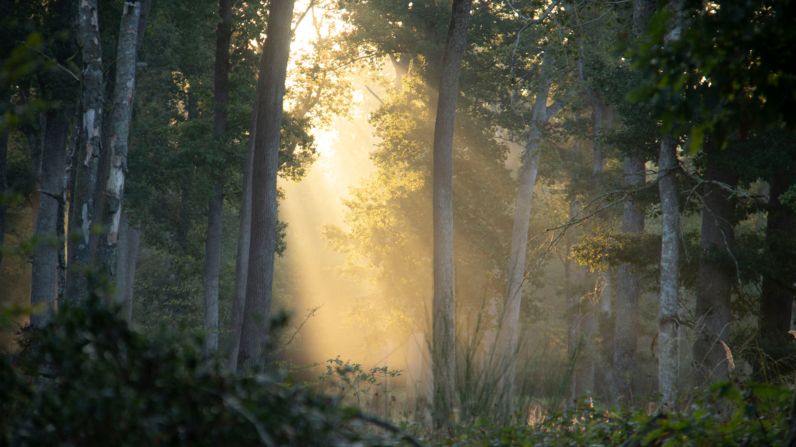
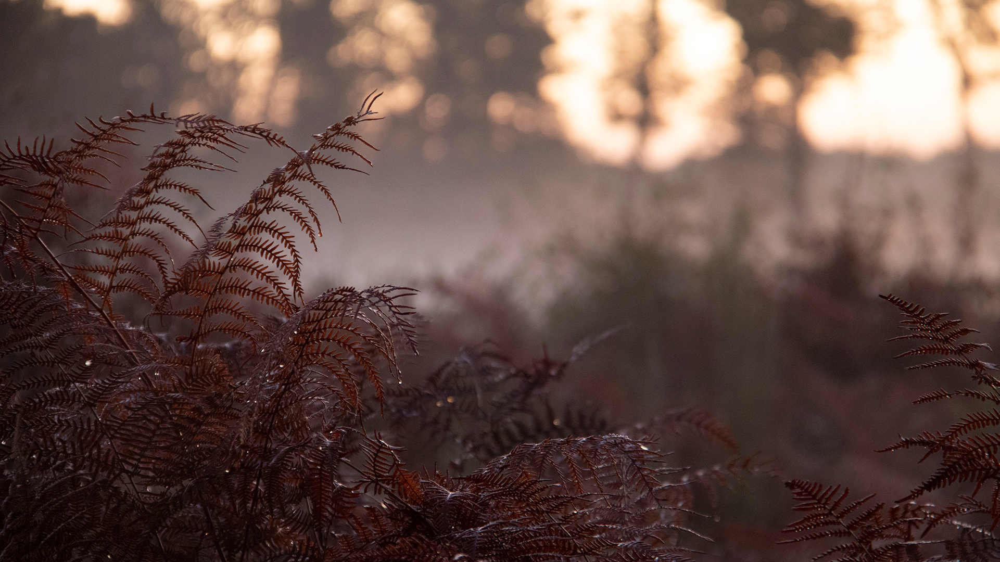
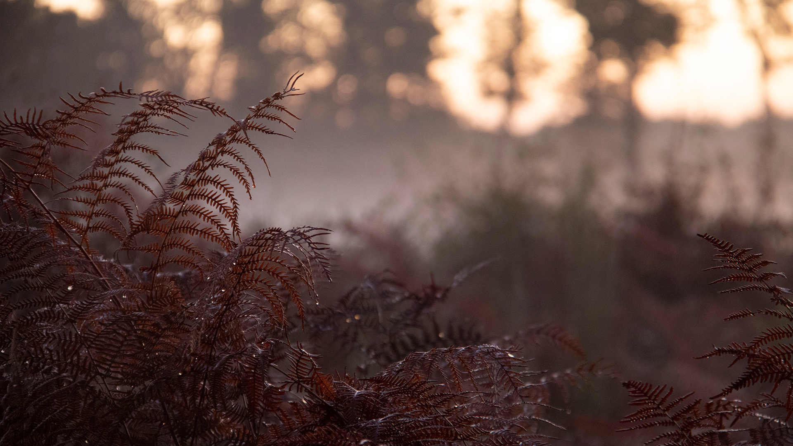

La création est ancrée en moi depuis mon plus jeune âge, me poussant toujours davantage dans l'expérimentation de nouvelles techniques. Aujourd'hui, je suis capable de façonner ce qui traverse mon esprit, en utilisant l'animation 3D, le graphisme et le sound design. C'est donc en tant que véritable couteau suisse du multimédia que je vous propose de jeter un œil à mon univers !
J'ai découvert très récemment la 3D via Blender, et je me suis pris de passion pour cet univers me permettant de façonner ce que j'imagine.

Des projets m'ayant permis d'apprendre la modélisation 3D, le texturing et la mise en scène.
Voici LIFEORB, une entreprise envoyant des "orbes de vie" sur des planètes mortes pour leur redonner vie. Le thème du projet était : écologie & reforestation.
La présentation dynamique d'un casque reprenant les traits du DT-770 pro. J'ai ici modélisé l'intégralité du casque et utilisé des turbulences de vent pour pousser les particules qui constituent le texte lumineux du début.
Une animation mettant en scène liquide et fumée, avec un changement de texture de la tasse. Je voulais donner une image design et fluide à la marque Nescafé.
Un travail mettant en scène la logique boid des particules, symbolisant ici des lucioles. L'herbe est générée de façon procédurale et j'ai dessiné des textures émissives sur le champignon après l'avoir modélisé.
Un court métrage réalisé dans le cadre de la 9ème édition du concours "Grand Angle". On y suit Marco et ses décisions pour reprendre sa vie en main. L'objectif était de mettre en avant les nudges (outil incitant aux bons choix), ici le texte sur l'escalier que j'ai incrusté via l'outil fusion de Davinci Resolve.
Court métrage réalisé dans le cadre du Nikon Film Festival 2025. Cette histoire nous montre Flynn, un homme tentant de survivre au piège mortel manigancé par Grim, un être mystérieux jouant avec la vie d'autrui. Une grande partie du travail a été la mise en place de l'ambiance, avec le décor et les habits. J'ai réalisé les différents effets visuels, comme la signature et la scène pre-générique.
Un documenteur mêlant humour et science-fiction, présentant d'étranges faits dans la maison de monsieur Xavier Piknou. Pour ce projet, nous devions réaliser une histoire gravitant autour de l'Intelligence Artificielle. Je me suis occupé du montage, sound design et de l'animation de l'alien.
Mon premier reportage, présentant la richesse naturelle de la forêt de Tronçais, son histoire, ses protecteurs, et les menaces planant au dessus... Pour ce projet, j'ai effectué en amont un travail de recherche autour de la forêt, et des différents points d'intérêts pour organiser le tournage. J'ai par la suite cherché à synthétiser au mieux l'essence du message que nous voulions transmettre, par l'intermédiaire de ma voix.
L'objectif était de préparer une exposition autour du peuple Dogon, proposée dans le musée des Arts d'Afrique et d'Asie de Vichy.
Mon idée était de réaliser un objet interactif projettant de la lumière sur un mur. Pour ce projet, je me suis penché sur le logiciel Blender afin de découvrir la 3D et pousser davantage mon idée.
Travail de rebranding de la communauté de communes des rives du Haut-Allier.
Deux animations en 2D ont été réalisées sur After Effects. L'oiseau représente un milan royal, animal présent en Auvergne. Pour le réaliser, je me suis servis de différentes photos et schémas, afin de reproduire son physique et son comportement, d'abord en pixels, puis en vectoriel.


 


Voici des photos prises lors d'une sortie dans la forêt de Tronçais, témoignant la beauté et le caractère mystique de la nature. Cette dernière m'inspire énormément dans mon travail.
Mes premiers pas dans le monde de la création numérique. C'est au travers de ces projets personnels que j'ai pu m'intéresser au logiciel Photoshop, et utiliser une tablette graphique.